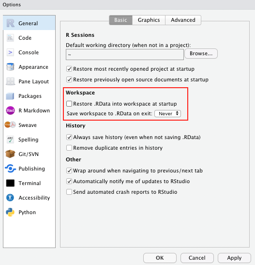
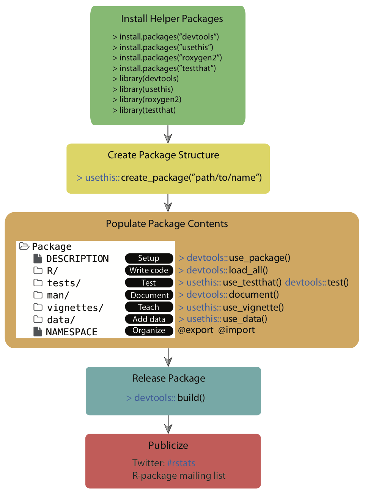

Debugging and Packaging
Next steps to more robust, reliable and efficient programming in R.
Welcome back everyone! Today we will have a look at
- How to deal with (maybe not so obvious) bugs in R
- How to write your own package in R
Debugging 🐞
When you write code, things will inevitably go wrong at some point. You can professionalize the way of how to - fix unanticipated problems (debugging) - let functions communicate problems and take actions based on those communications (condition handling) - learn how to avoid common problems before they occur (defensive programming)
Potential problems are communicated via “conditions”: errors, warnings, and messages. For example - fatal errors are raised by stop() and force all execution to terminate - warnings are generated by warning() and display potential problems - messages are generated by message() and can provide informative output on the way
Debugging workflow
- realize that you have a bug
- make bug repeatable: start with big block of code and narrow it down to isolate it
- figure out where it is
- fix it and test it
Debugging tools 🔦
In the lecture, we saw the following function that calculates the geodesic distance between two points specified by radian latitude/longitude using the Haversine formula (hf); taken from here, as an example. We inserted some bugs here… 🐛
geod_dist <- function(lat1, lon1, lat2, lon2, earth.radius = 6371) {
# from degrees to radians
deg2rad <- function(deg) return(deg*pi/180)
lon1 <- deg2rad(lon1)
lat1 <- deg2rad(lat1)
lon2 <- deg2rad(long2)
lat2 <- deg2rad(lat2)
# calculation
delta.long <- (lon2 - lon1)
delta.lat <- (lat2 - lat1)
a <- sin(delta.lat/2)^2 + cos(lat1) * cos(lat2) * sing(delta.long/2)^2
c <- 2 * asin(min(1,sqrt(a)))
d = earth_radius * c
return(d)
}
geod_dist(lat1 = 49.5, lon1 = 8.4, lat2 = 52.5, lon2 = 13.4)Trial and error 🎓
That is, if you see the error right away, try and fix it. You have lots of experience doing that. 🤓
Making function global 🌍
You basically turn the arguments of the function into global objects (objects you can see in your environment, otherwise the objects are only available within your function). Then you can step through the code line by line to locate the bug.
# make the objects that are otherwise entered as input parameters to your function global
lat1 = 49.5; lon1 = 8.4; lat2 = 52.5; lon2 = 13.4# now, execute line by line
deg2rad <- function(deg) return(deg*pi/180)
lon1 <- deg2rad(lon1)
lat1 <- deg2rad(lat1)
lon2 <- deg2rad(long2)
lat2 <- deg2rad(lat2)
delta.long <- (lon2 - lon1)
delta.lat <- (lat2 - lat1)
a <- sin(delta.lat/2)^2 + cos(lat1) * cos(lat2) * sing(delta.long/2)^2
c <- 2 * asin(min(1,sqrt(a)))
d = earth_radius * c
return(d)Problem: This creates global objects that match arguments names, which can become confusing and cause problems that become obvious when the function is called in a different environment. ⚠️ In case you choose this option, it is a good idea to clean your environment afterwards, or simply to remove all the new global objects using rm().
Side note If you haven’t done so already, as a general best practice advise, change the settings in your global options to “never” save the workspace as this can cause similar issues to the example described above.

Using traceback() 👈
geod_dist(lat1 = 49.5, lon1 = 8.4, lat2 = 52.5, lon2 = 13.4)
traceback()This shows you where the error occurred (but not why). Read from bottom to top (e.g. 1. called function X, 2. called function Y, error occurred in line #6 of function Y)
Using browser() 🦊
Basically, add browser() into your function somewhere before you expect the expected error.
geod_dist <- function(lat1, lon1, lat2, lon2, earth.radius = 6371) {
# from degrees to radians
browser()
deg2rad <- function(deg) return(deg*pi/180)
lon1 <- deg2rad(lon1)
lat1 <- deg2rad(lat1)
lon2 <- deg2rad(lon2)
lat2 <- deg2rad(lat2)
# calculation
delta.long <- (lon2 - lon1)
delta.lat <- (lat2 - lat1)
a <- sin(delta.lat/2)^2 + cos(lat1) * cos(lat2) * sin(delta.long/2)^2
c <- 2 * asin(min(1,sqrt(a)))
d = earth_radius * c
return(d)
}
geod_dist(lat1 = 49.5, lon1 = 8.4, lat2 = 52.5, lon2 = 13.4)You can then interactively work through the function line by line by hitting enter in the console or send additional lines of code.

Note: Other helpful tools to debug functions in R that you have not written yourself are debug(), that automatically opens a debugger at the start of a function call and trace(), which allows temporary code modifications inside functions that you don’t have easy access to (e.g. ggplot()).
Condition handling 🐜🐜🐝🐜
Sometimes errors come expected, and you want to handle them automatically, e.g.: - model fails to converge - download of files fails - stack processing of lists
Useful functions to deal with such cases: try() and tryCatch()
f1 <- function(x) {
log(x)
10
}
f1("x")Using try() 🤷
Ignore error:
f1 <- function(x) {
try(log(x))
10
}
f1("x")## Error in log(x) : non-numeric argument to mathematical function## [1] 10Suppress error message:
f1 <- function(x) {
try(log(x), silent = TRUE)
10
}
f1("x")## [1] 10Pass block of code to try():
try({
a <- 1
b <- "x"
a + b
})## Error in a + b : non-numeric argument to binary operatorCapture the output of try():
success <- try(1 + 2)
failure <- try("a" + "b") ## Error in "a" + "b" : non-numeric argument to binary operatorclass(success)## [1] "numeric"class(failure) ## [1] "try-error"Use possibly(), a function similar to try() from the purrr package when applying a function to multiple elements in a list. You can also provide a default value (here: NA) in case execution fails.
library(purrr)
elements <-list(1,2,3,"f")
results <- map(elements, log)
results <- map(elements, possibly(log, NA))Condition handling with tryCatch() 🎣
React to conditions, such as errors, warnings, messages, or interruptions, with certain actions “handlers” (functions that are called with the condition as an input) are mapped to condition handler functions can do anything but typically will return a value or create a more informative error message:
show_condition <- function(code) {
tryCatch(code,
error = function(c) "error",
warning = function(c) "warning",
message = function(c) "message" )
}
show_condition(stop("!"))## [1] "error"show_condition(warning("?!"))## [1] "warning"show_condition(message("?"))## [1] "message"If no condition is captured, tryCatch returns the value of the input:
show_condition(10+5)## [1] 15A more real-life example of how to use tryCatch() is this one:
model_selection <- function(data, formula1, formula2){
tryCatch(lm(formula1, data), error = function(e) lm(formula2, data))
}You try to fit formula1 to the data, however, maybe it is a model with very strict requirements. You might also have a more robust (but maybe less interesting) formula2 that you might fit if the requirements are not met and the modeling process throws an error.
Make more informative error messages
read.csv_new <- function(file, ...) {
tryCatch(read.csv(file, ...), error = function(c) {
c$message <- paste0(c$message, " (in ", file, ")")
stop(c)
})
}
read.csv("code/dummy.csv")
read.csv_new("code/dummy.csv")Defensive programming 🛡
- “making code fail in a well-defined manner”
- “fail fast”: as soon as something wrong is discovered, signal an error
- Three rules to implement the “fail fast” principle:
- be strict about what you accept (e.g., only scalars)
- avoid functions that use non-standard evaluation, such as subset(), transform(), or with()
- avoid functions that return different types of output depending on their input, e.g. [ and sapply
Debugging Exercise 💀
Here is a piece of code that comes with quite some flaws. As an optional take-home exercise, please identify the bugs, remove them and report what you have done using comments.
# load packages
library(tidyverse)
library(LegislatoR)
# get political data on German legislators
political_df <-
left_join(x = filter(get_political(legislature = "ger"), as.numeric("session") == 18),
y = get_core(legislature = "ger"), by = "pageid")
# wiki traffic data
traffic_df <-
get_traffic(legislature = "ger") %>%
filter(date >= "2013-10-22" & date <= "2017-10-24") %>%
group_by(pageid) %>%
summarize(traffic_mean = mean(traffic, na.rm = TRUE),
traffic_max = max(traffic, na.rm = TRUE))
# sessions served
sessions_served_df <-
get_political(legislature = "deu") %%
group_by(pageid) %>%
dplyr::summarize(sessions_served = n())
# merge
legislator_df <-
left_join(political_df, sessions_served_df, by = "pageid") %>%
left_join(traffic_df, by = "pageid")
# compute age
get_age <- function(birth, date_at) {
date_at_fmt <- date_at
birth_fmt <- birth
diff <- difftime(lubridate::ymd(birth_fmt), lubridate::ymd(date_at_fmt))
diff_years <- time_length(diff, "years")
diff_years
}
legislator_df$age_in_years <- round(get_age(legislator_df$birth, "2017-10-24"), 0)
# plot top 10 pageviews
legislator_df <- arrange(legislator_df, desc(traffic_mean))
legislator_df$rank <- 1:nrow(legislator_df)
legislator_df_table <- dplyr::select(rank, name, traffic_mean, traffic_max)
names(legislator_df_table) <- c("Rank", "Representative", "Mean", "Maximum")
legislator_df_table <- head(legislator_df_table, 10)
ggplot(legislator_df_table, aes(y = Mean, x = -Rank)) +
xlab("Rank") + ylab("Avg. daily page views") +
labs(title = "Top 10 representatives by average daily page views") +
geom_bar(stats = "identity") +
scale_x_continuous(breaks = -nrow(legislator_df_table):-1, labels = rev(1:nrow(legislator_df_table)))
geom_text(aes(y = 10, label = Representative), hjust = 0, color = "white", size = 2) +
coord_flip() +
theme_minimal()
# run model of page views as a function of sessions served, party, sex, and age in years
legislator_df$traffic_log <- log(legislator_df$traffic_mean)
covars <- c("sessions_served", "party", "sex", "age_in_years")
fmla <- paste("traffic_log", paste(covars, collapse = " - "), sep = " ~ ")
summary(log_traffic_model <- lm(fmla, legislator_df))
# plot table
sjPlot::tab_model(log_traffic_model)You can find the solutions here.
Writing Packages in R 📦
First of all, there is a very nice cheat sheet on package development.
Remember the overall workflow of creating a package:

Source: Simo Goshev & Steve Worthinton
We now run through the development of a small toy package.
Note: In this minimal example, we won’t sync the package to GitHub as not to overload information and won’t do version control via Git. In principle, it is strongly recommended to use Git for version control during the process.
Step 1: Load the packages you will need
Load the devtools package, which is the public face of a set of packages that support various aspects of package development. Also load the roxygen2 package, which provides helper functions to document your package.
library(devtools)
library(roxygen2)Step 2: Create your package directory 🏠
You are going to create a directory with the bare minimum folders of R packages. We are going to make a very tiny package providing only a single function as an illustration.
Call create_package() from the usethis package, which is loaded when you load devtools, to initialize a new package in a directory on your computer (and create the directory, if necessary). Make a deliberate choice about where to create this package on your computer. It should probably be somewhere within your home directory, alongside your other R projects. It should not be nested inside another RStudio Project, R package, or Git repo. Nor should it be in an R package library, which holds packages that have already been built and installed. The conversion of the source package we are creating here into an installed package is part of what devtools facilitates. Don’t try to do devtools’ job for it!
Substitute your chosen path into a create_package() call like this:
create_package("./awesomepackage", open = FALSE)
# create_package("~/Documents/R/awesomepackage", open = FALSE)Also, let’s navigate into that directory, which will allow us to use some fancy functions down the line.
setwd("./awesomepackage")Step 3: Add your functions
Now it’s time to add the functions you want to create the package for. Let’s just work with a toy function here:
Some years ago, there used to be an issue when we catenating two factors (see this stackoverflow discussion). The problem has already been solved, for example within the forcats package, but let’s pretend it had not.
For whatever reason, the result of catenating two factors used to be an integer vector consisting of the numbers 1, 2, 3, and 4. A possible solution would have been to coerce each factor to character, catenate, then re-convert to factor.
a <- factor(c("character", "hits", "your", "eyeballs"))
b <- factor(c("but", "integer", "where it", "counts"))
c(a, b) # used to cause troubles in the past
factor(c(as.character(a), as.character(b))) # was a common workaround (no longer necessary)Let’s drop that logic into the body of a function called fbind():
fbind <- function(a, b) {
factor(c(as.character(a), as.character(b)))
}Save this function as an R file, fbind.R, to the R directory in your package folder.
Alternatively, you can use the helper function use_r()from the usethis package, which automatically creates and/or opens a script below R/:
use_r("fbind")Step 4: Add documention 🎥
While not strictly necessary, it’s useful for Future-You and anybody else if you provide some documentation of your function. Luckily, there’s a tool again that helps you doing that. All you have to do is to add a comment like the following at the beginning of your function file, just like:
#' Bind two factors
#'
#' Create a new factor from two existing factors, where the new factor's levels
#' are the union of the levels of the input factors.
#'
#' @param a factor
#' @param b factor
#'
#' @return factor
#' @export
#' @examples
#' fbind(iris$Species[c(1, 51, 101)], PlantGrowth$group[c(1, 11, 21)])Then, you can run document() from roxygen2 to automatically create the documentation for you:
document()You should now be able to preview your help file like so:
?fbindStep 5: Install!
Now it is as simple as installing the package! You need to run this from the parent working directory that contains the package folder.
setwd("..")
install("awesomepackage")Now you have a real, live, functioning R package. For example, try typing ?fbind. You should see the standard help page pop up!
Step 6: Check your package
setwd("awesomepackage")
check()Step 7: Add a license 🏷
The field of (software) licensing is complex. Check out this resource for a start. In terms of open source licenses, there are two major types: - permissive licences: easy-going; can be freely copied, modified, and published. examples: MIT, Apache - copyleft licenses: can be freely copied and modified or personal use, but publishing may be restricted. example: GPL
The usethis package comes with helper functions to add various licenses with minimal effort.
Things can become more complicated when you use other people’s code and want to bundle it with yours. The licenses may not be compatible… see more here.
More detailed information on R package licenses can be found here for more information.
use_mit_license("Your Name")
# use_gpl_license("Your Name")
# use_proprietary_license("Your Name") # don't make it open sources; cannot be published on CRANAdditional steps
In case you’re having a nice idea for an actual package, please take a look at some much more in depth explanations, e.g. by Hadley Wickham and Jenny Bryan: R packages, Chapter 2 “The whole game” or Karl Broman: R package primer. An overview of next steps to take are:
- Iterative loading and testing -> load_all()
- Adding unit tests -> use_testthat()
- Import functions from other packages -> use_package()
- Version control and collaboration -> use_github()
- Add a proper public description -> use_readme_rmd()
- Add vignettes -> use_vignette()
- Submit to CRAN -> devtools::build(), devtools::release()
Take-home Package Exercise 🧳
As we do not have an assignment to this session, here is an optional take-home exercise to self-test your packaging skills.
Build your own package and publish it in a public GitHub repository. Here are the requirements:
- It should contain at least one function that you wrote. The function does not have to do anything innovative. Anything works really.
- It should contain all the necessary package components.
- The repository should contain a README.md that briefly reports what the package/function does.
- Everyone should be able to install your package using devtools::install_github(“
/ ”).
All you have to provide to users interested in your package would be this line of code:
devtools::install_github("<your-github-account-name>/<your-package-name>")Automation in R
We won’t cover automation in the lab today, but here is a summary of helpful resources in case you are planning to:
1. Organize the workflow of a complex project
- by running multiple scripts through a “master” R-script - see master.R example
- by running multiple scripts through a shell script - see master.sh example
- by using an R make-file - see makefile example. Note that an alternative package to use here would be targets
2. Schedule reoccurring tasks
- using the tashscheduleR package in R
- through the command line using
schtasks.exe - through the Windows Task Scheduler
- on macOS you would use cron or launchd
Sources
The debugging tutorial is inspired by Sean C. Anderson’s work on debugging R functions.
The packaging tutorial draws heavily on resources by Hilary Parker: Writing an R package from scratch, Hadley Wickham and Jenny Bryan: R packages, Chapter 2 “The whole game” and Karl Broman: R package primer
A work by Lisa Oswald & Tom Arend
Prepared for Intro to Data Science, taught by Simon Munzert